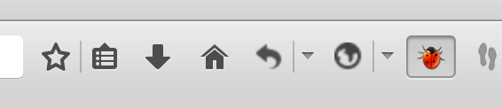
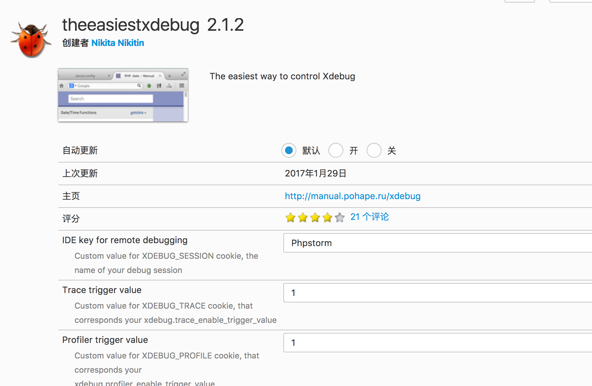
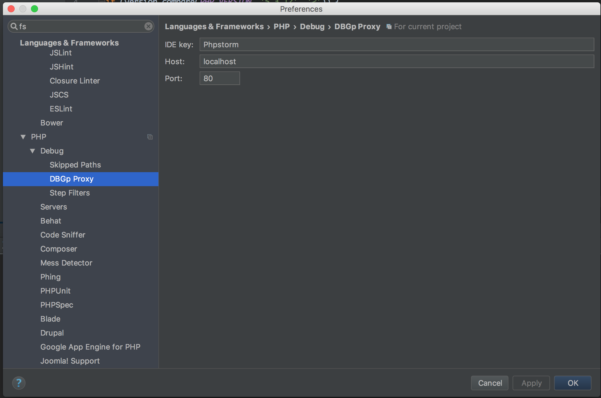
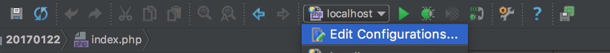
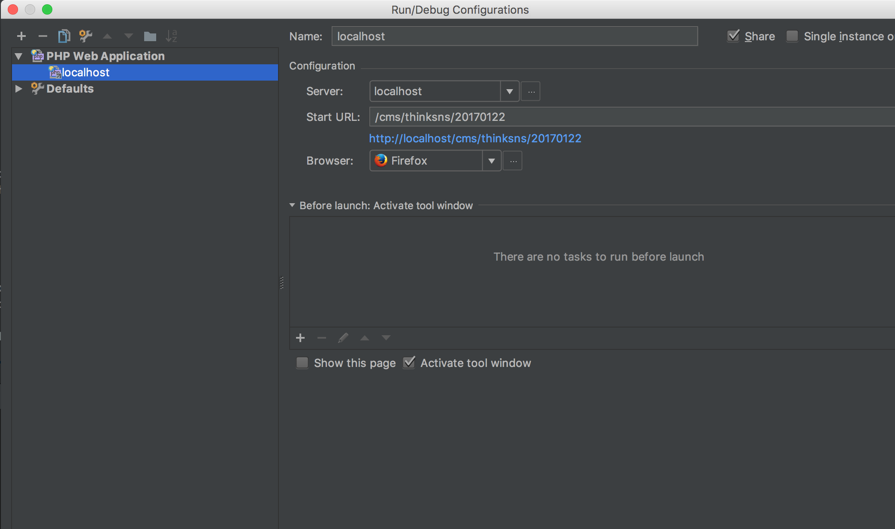

<!DOCTYPE html>
<html>
<head><meta name="generator" content="Hexo 3.8.0">
  <meta charset="utf-8">
  <meta http-equiv="X-UA-Compatible" content="IE=edge">
  
  <title>【OTHERS】php代码审计前的准备 | 0kami&#39;s Blog</title>
  <meta name="description" content="A Code Reviewer &amp;&amp; A Web 🐶">
  <meta name="keywords" content="">
  <meta name="HandheldFriendly" content="True">
  <meta name="apple-mobile-web-app-capable" content="yes">
  <link rel="shortcut icon" href="/images/avatar.jpg">
  <link rel="alternate" href="/atom.xml" title="0kami's Blog">
  <meta name="viewport" content="width=device-width, initial-scale=1, maximum-scale=1">
  <meta name="description" content="概述所谓“工欲善其事,必先利其器”，在代码审计前，我们需要准备提高我们审计效率的工具。">
<meta name="keywords" content="others">
<meta property="og:type" content="article">
<meta property="og:title" content="【OTHERS】php代码审计前的准备">
<meta property="og:url" content="http://blog.0kami.cn/2017/02/03/old-code-review-pre-prepare/index.html">
<meta property="og:site_name" content="0kami&#39;s Blog">
<meta property="og:description" content="概述所谓“工欲善其事,必先利其器”，在代码审计前，我们需要准备提高我们审计效率的工具。">
<meta property="og:locale" content="en">
<meta property="og:image" content="http://blog.0kami.cn/img/pre_code_review/bug.png">
<meta property="og:image" content="http://blog.0kami.cn/img/pre_code_review/bug2.png">
<meta property="og:image" content="http://blog.0kami.cn/img/pre_code_review/step1.png">
<meta property="og:image" content="http://blog.0kami.cn/img/pre_code_review/step2.png">
<meta property="og:image" content="http://blog.0kami.cn/img/pre_code_review/step3.png">
<meta property="og:image" content="http://blog.0kami.cn/img/pre_code_review/step4.png">
<meta property="og:updated_time" content="2018-01-25T07:36:01.000Z">
<meta name="twitter:card" content="summary">
<meta name="twitter:title" content="【OTHERS】php代码审计前的准备">
<meta name="twitter:description" content="概述所谓“工欲善其事,必先利其器”，在代码审计前，我们需要准备提高我们审计效率的工具。">
<meta name="twitter:image" content="http://blog.0kami.cn/img/pre_code_review/bug.png">

  <link href="https://fonts.googleapis.com/css?family=Inconsolata|Titillium+Web" rel="stylesheet">
  <link href="https://fonts.googleapis.com/css?family=Roboto+Mono" rel="stylesheet">
  <link href="//cdn.bootcss.com/node-waves/0.7.5/waves.min.css" rel="stylesheet">
  <link rel="stylesheet" href="/style.css">
  <script>
    function setLoadingBarProgress(num) {
      document.getElementById('loading-bar').style.width=num+"%";
    }
  </script>
</head>
</html>
<body>
  <div id="loading-bar-wrapper">
  <div id="loading-bar"></div>
</div>


  <script>setLoadingBarProgress(20)</script> 
  <header class="l_header">
	<div class="wrapper">
		<div class="nav-main container container--flex">
			<a class="logo flat-box" href="/">
				0kami's Blog
			</a>
			<div class="menu">
				<ul class="h-list">
					
						<li>
							<a class="flat-box nav-home" href="/">
								Home
							</a>
						</li>
					
						<li>
							<a class="flat-box nav-archives" href="/archives">
								Archives
							</a>
						</li>
					
						<li>
							<a class="flat-box nav-about" href="/about">
								About
							</a>
						</li>
					
				</ul>
				<div class="underline"></div>
			</div>
			
				<div class="m_search">
					<form name="searchform" class="form u-search-form">
						<input type="text" class="input u-search-input" placeholder="Search">
						<span class="icon icon-search"></span>
					</form>
				</div>
			
			<ul class="switcher h-list">
				
					<li class="s-search"><a href="javascript:void(0)"><span class="icon icon-search flat-box"></span></a></li>
				
				<li class="s-menu"><a href="javascript:void(0)"><span class="icon icon-menu flat-box"></span></a></li>
			</ul>
		</div>
		
		<div class="nav-sub container container--flex">
			<a class="logo" href="javascript:void(0)">
				Word of Forks
			</a>

			<ul class="switcher h-list">
				<li class="s-comment"><a href="javascript:void(0)"><span class="icon icon-chat_bubble_outline flat-box"></span></a></li>
				<li class="s-top"><a href="javascript:void(0)"><span class="icon icon-arrow_upward flat-box"></span></a></li>
				<li class="s-toc"><a href="javascript:void(0)"><span class="icon icon-format_list_numbered flat-box"></span></a></li>
			</ul>
		</div>
	</div>
</header>
<aside class="menu-phone">
	<nav>
		
			<a href="/" class="nav-home nav">
				Home
			</a>
		
			<a href="/archives" class="nav-archives nav">
				Archives
			</a>
		
			<a href="/about" class="nav-about nav">
				About
			</a>
		
	</nav>
</aside>

    <script>setLoadingBarProgress(40);</script>
  <div class="l_body">
    <div class='container clearfix'>
      <div class='l_main'>
        <article id="post-old-code-review-pre-prepare" class="post white-box article-type-post" itemscope="" itemprop="blogPost">
	<section class="meta">
	<h2 class="title">
  	<a href="/2017/02/03/old-code-review-pre-prepare/">
    	【OTHERS】php代码审计前的准备
    </a>
  </h2>
	<time>
	  Feb 3, 2017
	</time>
	
    
    <div class="cats">
        <a href="/categories/notes/">notes</a>
    </div>

	</section>
	
		<section class="toc-wrapper"><ol class="toc"><li class="toc-item toc-level-1"><a class="toc-link" href="#概述"><span class="toc-number">1.</span> <span class="toc-text">概述</span></a></li><li class="toc-item toc-level-1"><a class="toc-link" href="#环境"><span class="toc-number">2.</span> <span class="toc-text">环境</span></a></li><li class="toc-item toc-level-1"><a class="toc-link" href="#动态调试环境"><span class="toc-number">3.</span> <span class="toc-text">动态调试环境</span></a><ol class="toc-child"><li class="toc-item toc-level-2"><a class="toc-link" href="#php添加xdebug配置"><span class="toc-number">3.1.</span> <span class="toc-text">php添加xdebug配置</span></a></li><li class="toc-item toc-level-2"><a class="toc-link" href="#firefox安装xdebug扩展"><span class="toc-number">3.2.</span> <span class="toc-text">firefox安装xdebug扩展</span></a></li><li class="toc-item toc-level-2"><a class="toc-link" href="#配置phpstorm"><span class="toc-number">3.3.</span> <span class="toc-text">配置phpstorm</span></a></li></ol></li><li class="toc-item toc-level-1"><a class="toc-link" href="#mysql执行审计监控"><span class="toc-number">4.</span> <span class="toc-text">mysql执行审计监控</span></a></li><li class="toc-item toc-level-1"><a class="toc-link" href="#终端"><span class="toc-number">5.</span> <span class="toc-text">终端</span></a></li><li class="toc-item toc-level-1"><a class="toc-link" href="#总结"><span class="toc-number">6.</span> <span class="toc-text">总结</span></a></li></ol></section>
	
	<section class="article typo">
  	<div class="article-entry" itemprop="articleBody">
    	<h1 id="概述"><a href="#概述" class="headerlink" title="概述"></a>概述</h1><p>所谓“工欲善其事,必先利其器”，在代码审计前，我们需要准备提高我们审计效率的工具。</p>
<a id="more"></a>
<h1 id="环境"><a href="#环境" class="headerlink" title="环境"></a>环境</h1><ol>
<li>Mac</li>
<li>xampp(可以用phpstudy或者是其他集成环境代替)</li>
<li>Navicat Premium(个人认为Mac下最好的数据库管理工具，学生党只能用**,有能力尽量支持正版)</li>
<li>phpstorm(这里的IDE用的是我自己比较习惯的，也可以使用其他你比较熟悉的)</li>
<li>xdebug(用来动态调试)</li>
<li>终端</li>
<li>浏览器(firefox、chrome,这里使用firefox,hackbar是个好东西)</li>
</ol>
<p>安装上述的软件之类的就不说了，下文主要是动态调试环境搭建。</p>
<h1 id="动态调试环境"><a href="#动态调试环境" class="headerlink" title="动态调试环境"></a>动态调试环境</h1><h2 id="php添加xdebug配置"><a href="#php添加xdebug配置" class="headerlink" title="php添加xdebug配置"></a>php添加xdebug配置</h2><p>xampp的php.ini位于<code>/install/path/etc/php.ini</code>，在配置文件最后添加上</p>
<figure class="highlight plain"><table><tr><td class="gutter"><pre><span class="line">1</span><br><span class="line">2</span><br><span class="line">3</span><br><span class="line">4</span><br><span class="line">5</span><br><span class="line">6</span><br><span class="line">7</span><br><span class="line">8</span><br><span class="line">9</span><br><span class="line">10</span><br><span class="line">11</span><br></pre></td><td class="code"><pre><span class="line">[xdebug]</span><br><span class="line">zend_extension=/Applications/XAMPP/xamppfiles/lib/php/extensions/no-debug-non-zts-20131226/xdebug.so</span><br><span class="line">xdebug.remote_autostart=on</span><br><span class="line">xdebug.remote_enable=on</span><br><span class="line">xdebug.remote_enable=1</span><br><span class="line">xdebug.remote_mode=&quot;req&quot;</span><br><span class="line">xdebug.remote_log=&quot;/var/log/xdebug.log&quot;</span><br><span class="line">xdebug.remote_host=localhost/127.0.0.1</span><br><span class="line">xdebug.remote_port=9000</span><br><span class="line">xdebug.remote_handler=&quot;dbgp&quot;</span><br><span class="line">xdebug.idekey=&quot;PhpStorm&quot;</span><br></pre></td></tr></table></figure>
<p>so文件是xampp自带的，mac下的配置可以直接copy我的<br>保存后重启apache</p>
<h2 id="firefox安装xdebug扩展"><a href="#firefox安装xdebug扩展" class="headerlink" title="firefox安装xdebug扩展"></a>firefox安装xdebug扩展</h2><p>firefox下的xdebug扩展叫 the easiest xdebug，搜索一下安装<br>安装完成后点亮工具栏上的甲虫，开启调试<br><br>设置key,更php配置文件中相同<br></p>
<h2 id="配置phpstorm"><a href="#配置phpstorm" class="headerlink" title="配置phpstorm"></a>配置phpstorm</h2><p>打开Preferences-&gt;Languages&amp;Framework-&gt;php<br><br>如图设置servers，接着设置debug下的DBGp Proxy<br><br>设置完成后在工具栏处找到edit Configurations<br><br>新增php web application<br><br>接下来就可以愉快的下断点，动态调试了</p>
<h1 id="mysql执行审计监控"><a href="#mysql执行审计监控" class="headerlink" title="mysql执行审计监控"></a>mysql执行审计监控</h1><p>在navicat或终端中运行以下2句</p>
<blockquote>
<p>set global general_log=on;<br>set global log_output=’table’;</p>
</blockquote>
<p>查看mysql.general_log表可以看到运行过的sql语句，方便我们查询<br>win下可以用seay的代码审计工具，带了mysql的sql监控</p>
<h1 id="终端"><a href="#终端" class="headerlink" title="终端"></a>终端</h1><p>终端主要用到了grep这个工具，网上有很多相关的教材。<br>主要匹配输入输出点，危险函数等等<br>具体的以后有空了再补充</p>
<h1 id="总结"><a href="#总结" class="headerlink" title="总结"></a>总结</h1><p>记录一下过程，以后能看看，愉快的代码审计吧:P</p>

  	</div>
	  
	  <div class="article-tags tags">
      
        <a href="/tags/others/">others</a>
      
	  </div>
    
		
	
		<div class="art-item-footer">
				
					<span class="art-item-left"><i class="icon icon-chevron-thin-left"></i>prev：<a href="/2017/03/15/old-njctf-2017/" rel="prev" title="【CTF】NJCTF2017 writeup">
						【CTF】NJCTF2017 writeup 
					</a></span>
				
				
					<span class="art-item-right">next：<a href="/2017/01/29/old-DM-sql-injection/" rel="next" title="【Code Review】DM企业建站系统前台盲注">
						【Code Review】DM企业建站系统前台盲注
					</a><i class="icon icon-chevron-thin-right"></i></span>
				
		</div>
	
	</section>
	
		<section id="comments">
			<div id="disqus_thread"></div>
		</section>
	
</article>
<script>
	window.subData = {
		title: '【OTHERS】php代码审计前的准备',
		tools: true
	}
</script>

      </div>
      <aside class='l_side'>
        
  <section class="m_widget about">

<div class="header">wh1t3p1g</div>
<div class="content">
<div class="desc">A Code Reviewer &amp;&amp; A Web 🐶</div>
</div>
</section>

  <section class="m_widget links">
<div class="header">Links</div>
<div class="content">
    <ul class="entry">
    
        <li><a class="flat-box" target="_blank" href="http://blog.orleven.com">
            <div class="name">orleven</div>
        </a></li>
    
        <li><a class="flat-box" target="_blank" href="http://www.warmeng.com">
            <div class="name">warmeng</div>
        </a></li>
    
        <li><a class="flat-box" target="_blank" href="http://fr4nk.0kami.cn">
            <div class="name">fr4nk</div>
        </a></li>
    
    </ul>
</div>
</section>

  <section class="m_widget categories">
<div class="header">Categories</div>
<div class="content">
    
    <ul class="entry">
    
        <li><a class="flat-box" href="/categories/codereview/"><div class="name">codereview</div><div class="badget">6</div></a></li>
    
        <li><a class="flat-box" href="/categories/ctf/"><div class="name">ctf</div><div class="badget">5</div></a></li>
    
        <li><a class="flat-box" href="/categories/notes/"><div class="name">notes</div><div class="badget">11</div></a></li>
    
    </ul>
    
</div>
</section>

  
<div class="m_widget tagcloud">
    <div class="header">Tags</div>
    <div class="content">
        <a href="/tags/bctf/" style="font-size: 14px; color: #808080">bctf</a> <a href="/tags/cms/" style="font-size: 20px; color: #000">cms</a> <a href="/tags/cve/" style="font-size: 17px; color: #404040">cve</a> <a href="/tags/ddctf/" style="font-size: 14px; color: #808080">ddctf</a> <a href="/tags/hitbxctf/" style="font-size: 14px; color: #808080">hitbxctf</a> <a href="/tags/mobile/" style="font-size: 14px; color: #808080">mobile</a> <a href="/tags/njctf/" style="font-size: 14px; color: #808080">njctf</a> <a href="/tags/others/" style="font-size: 17px; color: #404040">others</a> <a href="/tags/suctf/" style="font-size: 14px; color: #808080">suctf</a> <a href="/tags/vul/" style="font-size: 20px; color: #000">vul</a>
    </div>
</div>


      </aside>
      <script>setLoadingBarProgress(60);</script>
    </div>
  </div>
  <footer id="footer" class="clearfix">

	<div class="social-wrapper">
  	
      
        <a href="https://github.com/wh1t3p1g" class="social github" target="_blank" rel="external">
          <span class="icon icon-github"></span>
        </a>
      
        <a href="/atom.xml" class="social rss" target="_blank" rel="external">
          <span class="icon icon-rss"></span>
        </a>
      
    
  </div>
  
  <div>Theme <a href="https://github.com/stkevintan/hexo-theme-material-flow" class="codename">MaterialFlow</a> designed by <a href="http://keyin.me/" target="_blank">Kevin Tan</a>.</div>
  
</footer>


  <script>setLoadingBarProgress(80);</script>
  
<script>
  var disqus_shortname = '0kami';
  
  var disqus_url = 'http://blog.0kami.cn/2017/02/03/old-code-review-pre-prepare/';
  
  (function(){
    var dsq = document.createElement('script');
    dsq.type = 'text/javascript';
    dsq.async = true;
    dsq.src = '//' + disqus_shortname + '.disqus.com/embed.js';
    (document.getElementsByTagName('head')[0] || document.getElementsByTagName('body')[0]).appendChild(dsq);
  })();
</script>


<script src="//apps.bdimg.com/libs/jquery/2.1.4/jquery.min.js"></script>
<script src="//cdn.bootcss.com/node-waves/0.7.5/waves.min.js"></script>
<script src="//cdn.bootcss.com/scrollReveal.js/3.3.2/scrollreveal.min.js"></script>
<script src="/js/jquery.fitvids.js"></script>
<script>
	var GOOGLE_CUSTOM_SEARCH_API_KEY = "";
	var GOOGLE_CUSTOM_SEARCH_ENGINE_ID = "";
	var ALGOLIA_API_KEY = "";
	var ALGOLIA_APP_ID = "";
	var ALGOLIA_INDEX_NAME = "";
  var AZURE_SERVICE_NAME = "";
  var AZURE_INDEX_NAME = "";
  var AZURE_QUERY_KEY = "";
  var BAIDU_API_ID = "";
  var SEARCH_SERVICE = "hexo";
  var ROOT = "/"||"/";
  if(!ROOT.endsWith('/'))ROOT += '/';
</script>
<script src="/js/search.js"></script>
<script src="/js/app.js"></script>


  <script>setLoadingBarProgress(100);</script>
</body>
</html>
